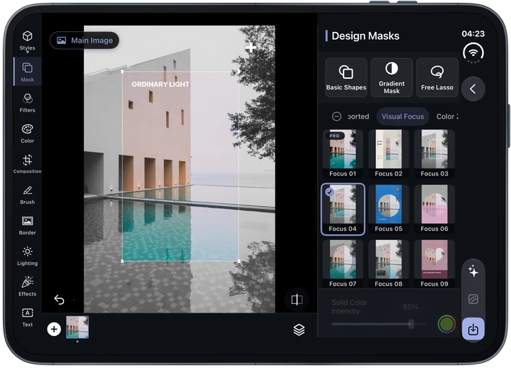

Decide which part needs a change
First decide whether the issue affects the whole image or just one area’s brightness, color, or style. Establish an overall direction before placing more local changes.
A geometric mask suits a clearly defined area. A brush suits a region you want to draw yourself. Inspect the actual boundary rather than judging only from a small preview.
See local editing in the real interface
On an unfolded iPhone Duo in landscape, the photo and mask tools appear side by side. Check the corners of the rectangular mask, then follow its edges to see whether it covers any details you want to keep.


Check the area, the edges, and the whole photo
- Select the area and check the mask’s position and size.
- Apply the local effect, adjust its strength, and inspect the boundary.
- Zoom in around the subject, hair, or architectural edges to look for unwanted changes.
- Zoom out to judge whether the adjustment belongs in the image. Undo or refine it if needed.
- Review both the whole image and local detail before saving, keeping your original for comparison.
Can I make local adjustments after color matching?
After confirming a color match, you can continue in the editor. A reference helps establish direction; masks and brushes help you decide where further work belongs.
Local editing still involves choosing an area and judging the result. It does not imply automatic, accurate selection of every person, sky, or object.